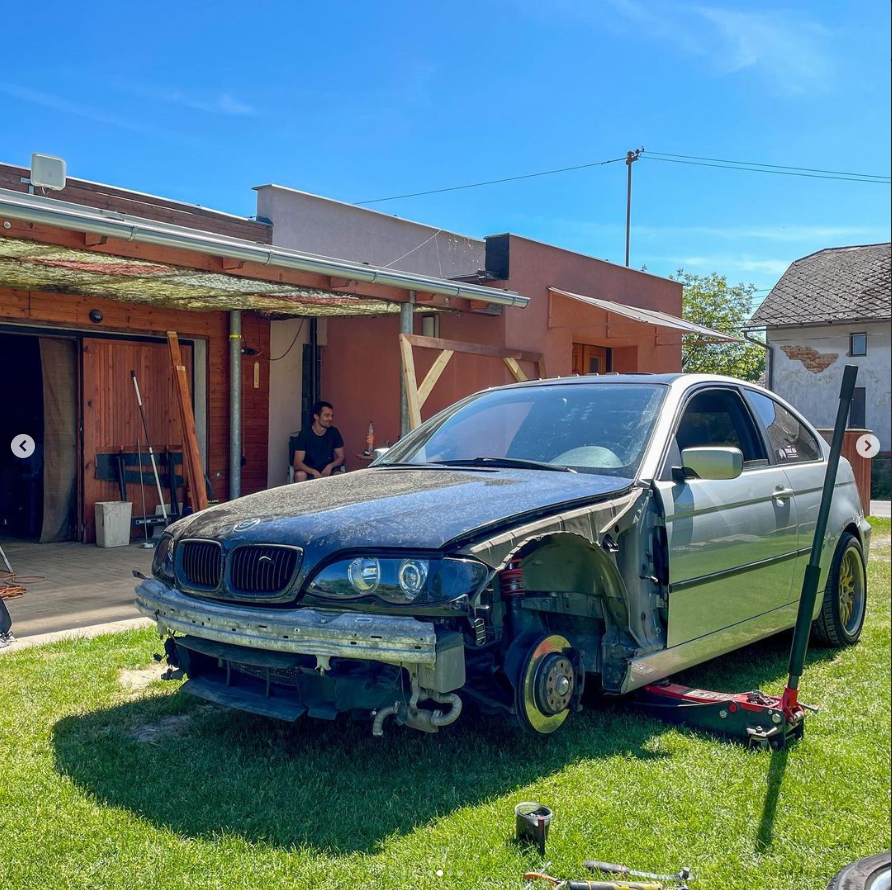
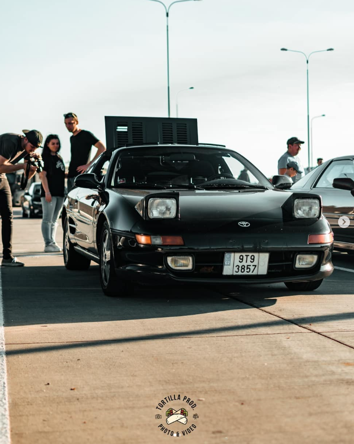

Povídání s Dominikem Kantorem
- Tento můj hodně dobrý známý je Ostravák jak vyšitý. Neznám ho moc dlouho, možná 3-4roky, ale vede jeden z nejzajímavějších životů. Aspoň teda za mě. Baví ho auta stejně jako mě, na spoustu věcí má stejné nebo podobné názory, a jak se v rozhovoru dozvíte, dělá i pro policii. S výškou okolo 180cm je o dost vyšší než já. Má hnědé oči (podle fotky, nikdy jsem se na ně moc nezaměřil) a krátké hnědé vlasy. Většinou i přiblblý výraz v obličeji.
Jak se jmenuješ?
- To snad víš, ne? (Smích) Dominik Kantor
Co děláš?
- To víš taky. (Další záchvat smíchu) utomechanik a kriminalista u policie v Ostravě.
Baví tě tohle povolání?
- Mám tam super partu a vždycky je s kým pokecat. Jen někteří jsou fakt na hlavu. Tak jsem spíš ten automechanik, no.
Co myslíš tím, někteří na hlavu?
- Dají za úkol něco, co neumíš nebo nemáš ani dělat podle toho, jak se jmenuje, víš, co myslím.
"Popis práce?"
Jo, tamtoho.
Dost o práci. Co děláš rád mimo ni. Máš nějaké koníčky?
- Koníčky úplně ne. Ale tak když je hezky, vytáhnu kolo na traily nebo někde (upraveno pro použití do Čj) si dáme pivečko s kámošema. Poslední dobou se ale starám o svého gruze.
Můžeš vysvětlit výraz gruz?
- Hele, ty ho víš, ale tak dáváš to do školy, tak se aspoň učitelka nebude blbě ptát. Gruz z polské hatmatilky znamená auta na vyblbnutí v hodně špatném stavu. Především v polorozpadu, nějaké BMW na drifty.

Když jsme u toho driftu, driftuješ?
- Na to nemám odvahu ani auto, jen se přes zimu sem tam sklouznu. A co se tak blbě ptáš, to ty z nás dvou jezdíš virtual.
(Smích.)
Ten virtual by sis zkusit nechtěl?
- Moc peněz a moc práce se s tím naučit. Navíc já mám reálný auto, takže i kdybych chtěl, ať si můžu s vámi zajezdit, moc v tom nevidím a radši s vámi aspoň pokecám.
Zpátky k autům. Kolik si jich měl?
- Hele, vůbec nevím, 5? (Smích.)
Které sis nejvíc oblíbil?
- Přece svoji MR2. Škoda, že jsem ji prodal. Byla prostě úžasná.

Jak dlouho jsi ji měl?
- Asi 5 let? Co mám furt s těma pětkama. (Opět záchvat smíchu.)
Co je nejznámějšího na tvé práci?
- To můžeš takhle přeskakovat témata?
Asi jo. (Já)
Ok. Tak to budou asi vraždy. Vím o nich mezi prvními, ale já jsem ten kanclovej typ, takže já nejsem jako v těch filmech, kde máme zkumavky a takovýhle kraviny. Já si zčeknu otisky a je to.
Kolik vražd jsi vyřešil?
- No, já žádnou, ale s týmem několik. Nevím přesný počet.
Kdyby sis mohl, změnil bys povolání?
- Vůbec. Tohle je strašná raketa. Kde jinde můžeš říct, že děláš na kriminále. Nikde. Je to super. Hlavně firemní auta a zdarma benál. Samozřejmě nesmí chybět i služebák.
Poslední otázka. Stalo se ti něco zajímavé?
- Spousta věcí. Nejzajímavější asi ale bude, když jsem se jednou na Slovensku snažil ne v zrovna způsobilým stavu, polsky zjistit, kudy do Čech. V zimě v MR2 bez střechy. Nakonec jsem tam radši přespal.